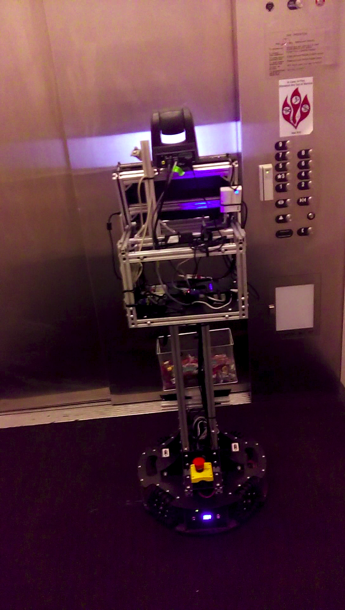
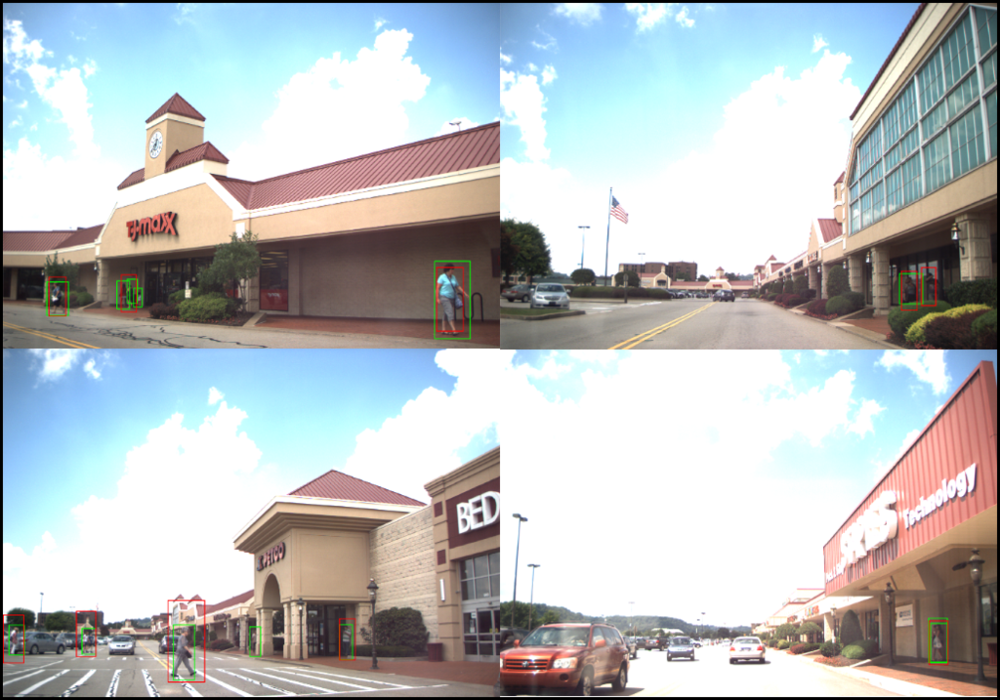
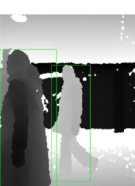
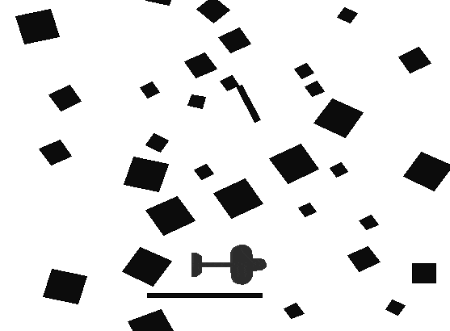
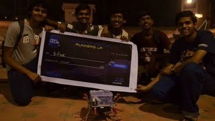

Guides: Prof. Manuela Veloso and Dr. Stephanie Rosenthal (Sep'15 - Present)
Created a novel method-- Verbalization, to generate explanation for robot's experience and actions, based on the user's preference. Motivation for expressing robot's experience lies in the fact that this has been shown to improve the trustworthiness of the robots. This concept has been used to describe the path taken by the CoBot.
Future work involves extending the verbalization to describe interesting event that happened to the robots in vision and path experience.

CoBot waiting for elevator
CoBot is a mobile service robot designed to traverse in corridors and elevator. Our CoBot robots follow a novel symbiotic autonomy, in which the robots are aware of their perceptual, physical, and reasoning limitations and pro-actively ask for help from humans, for example for object manipulation actions. CoBot robots have successfully performed variety of service tasks in our multi-building environment including accompanying people to meetings and delivering objects to offices due to its navigation and localization capabilities.
Verbalization: Narration of Autonomous Mobile Robot Experience, Stephanie Rosenthal, Sai P. Selvaraj, and Manuela Veloso. In Proceedings of IJCAI'16, the 26th International Joint Conference on Artificial Intelligence, New York City, NY, July, 2016.
Dynamic Generation and Refinement of Robot Verbalization, Vittorio Perera, Sai P. Selvaraj, Stephanie Rosenthal, and Manuela Veloso. In Proceedings of RO-MAN'16, the IEEE International Symposium on Robot and Human Interactive Communication, Columbia University, NY, August, 2016.
Implemented Fast-RCNN and Scale-aware Fast-RCNN for pedestrian detection using AlexNet based architecture in Caffe. The network were trained using Caltech Pedestrian dataset and tested for real time performance by mounting in car.
Achieved a state-of-the-art miss rate of 7.2%, using Fast-RCNN, improved it to 5.2% using HDR images. Detection performance was testing using HDR images which offered slight improvement in detection performance.

Results of pedestrian detection on newly collected data
Increased the robustness to noise and performance, of DDPG approach using over-complete state representation.
Tested using TORCS--- racing game, and inverted pendulum environment.
More details can be found here
Implementing Deep Deterministic Policy Gradient (DDPG) to teach the goalie defend goals.
I am currently using DRL to teach the goalie of CMDragons---CMU’s small size robot soccer team, to defend the goals in simulation. Since the simulator is very realistic, and policy to learn is complex, we started by training simpler tasks with increasing complexity of the policy to be learnt.
More details can be found here
Today, there are two major paradigms for vision-based autonomous driving systems: mediated perception approaches that parse an entire scene to make a driving decision, and behavior reflex approaches that directly map an input image to a driving action by a regressor. A third paradigm: a direct perception based approach to estimate the affordance for driving was proposed recently. Where the input image is mapped to a small number of key perception indicators that directly relate to the affordance of a road/traffic state for driving. The work uses AlexNet training from scratch for the mapping.
This worked explored the possibility using transfer learning for learning the mapping. We used pre-trained Alexnet to map the input image to a set of key perception indicators. These indicators enables a simple controller to drive the car autonomously. We fine-tunned weights for all the convolution layers (layers 1-5) in the network and trained from scratch for all the fully connected layers (layers 6-8) to preserve the aspect ratio of the images obtained from the simulator.
Pre-trained Alexnet produced similar result compared to previous work, which trained from scratch.
More details can be found here
Codes available here
There has been significant improvement in the recognition accuracy due to the recent resurgence of deep neural networks. In this work we built a LSTM based speaker recognition system on a dataset collected from Cousera lectures-- text independent and noisy dataset. On which a state-of-the-art testing time accuracy of 93% was obtained.
The final network after experimenting was 2 layer deep with 25 LSTM units each. Performance in text independent dataset, were equivalent to state-of-the-art LSTM (Bidirectional-LSTM) based results.
More details can be found here
Codes available here
Mobile robots possess limited computational resources which are shared among various processes required for autonomous operation, so the human detector algorithm must have a small computational footprint. The detections has to be robust to variation in pose, occlusion and lighting variation. In this work we have implemented an algorithm for fast and robust human detection in indoor environment using only depth image.
The algorithm involves multiple graph segmentation, heuristic based region filter to obtain candidates for potential human. Finally the candidates are classified using SVM based classification.
More details can be here

Results of segmentation algorithm
Prof. Srinivasa Chakravarthy.V, Computational Neuroscience Lab, IIT Madras (Aug'14 - Apr'15)
Create a novel method to synthesis online characters, irrespective of the language. We creating a general Structure which can accommodate all the characteristics and variation of different languages and modelled it to resemble human writing. Intended for training set expansion for developing online character recognition engines.
Implemented Deep Neural Network (DNN) using Auto-Encoders, on a very sparse training set, and obtained overall accuracy of 88.2%. Worked as student project associate on software development for recognition engine.
Prof. Alejandro Ramirez-Serrano, AR2S Lab, Univ. of Calgary, Canada (May'14 - Aug'14)

Represented IIT Madras in, ABU Robocon for the year 2013.
Problem Statement involves build a Autonomous and a Manual Robot of 0.6mx0.6mx1.0m, both capable of navigating through a Known terrain, pick and place objects and transfer object between them. And throw a object and make it land in a disc of diameter 60cm, which is approximately 1.5m high and 5m away from the robot.
Implemented Dead Reckoning algorithm I previously developed, to navigate using two wheel encoder. As a team we also worked in automating the task involved and developed strategies to communicate with other robot while performing coordinated tasks.
Worked with a team of 24 students. {Won Fastest Job Completion Award} for the year 2013 in the National level
Our team Won Fastest Job Completion Award for the year 2013 in national level, among over 80 teams.
Objective is to develope a small robot of 0.25m.x0.25m capable of performing the tasks of a rover like communication, live video transmission, collision avoidance and detecting appropriate fags, in an artificial lunar surface.
Placed Second in National level among over 90 teams.

Our team and Rover
Mr.Elisha Madhu Kumar Karyamsetty, CTO
Objective is to Render fonts from different languages by converting them to vector data using B-splines information from font TTF file, for using it in CAD/CAM software. Used Visual Studio C++. Learnt a lot about efficient, clean programming and memory management while I worked with various data structure and templates.